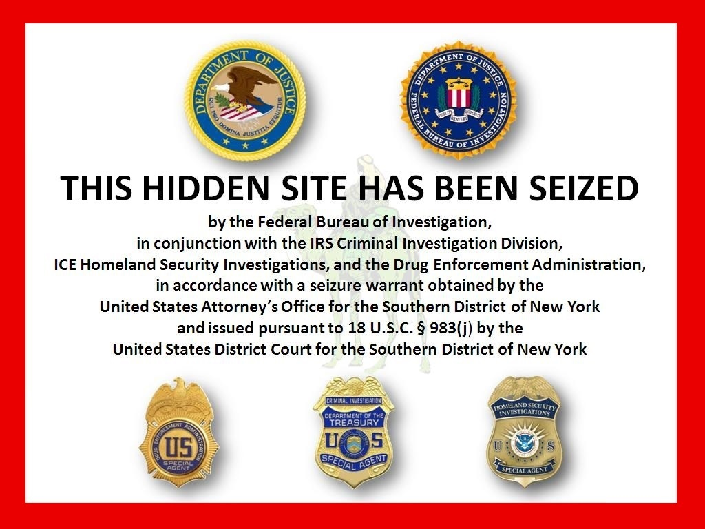
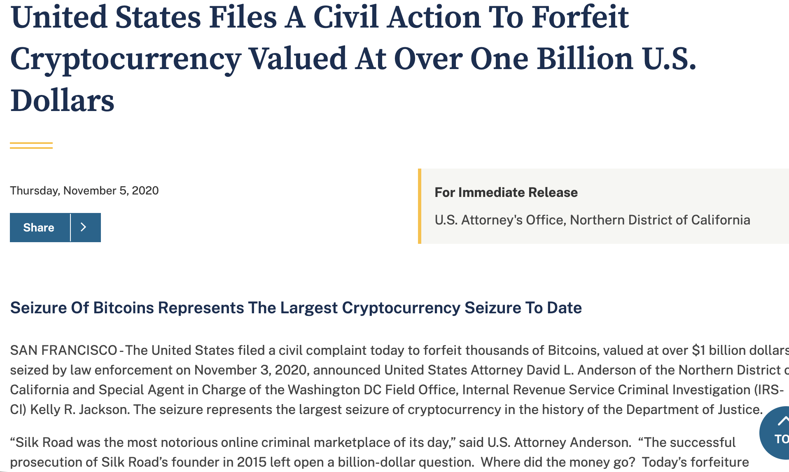
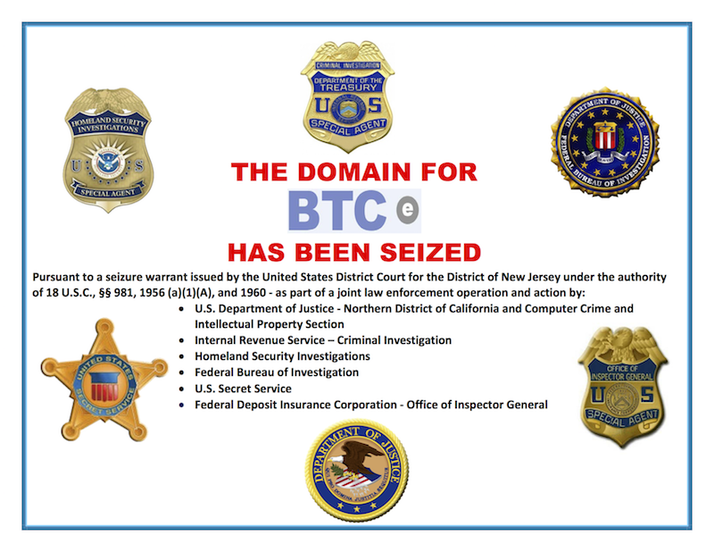
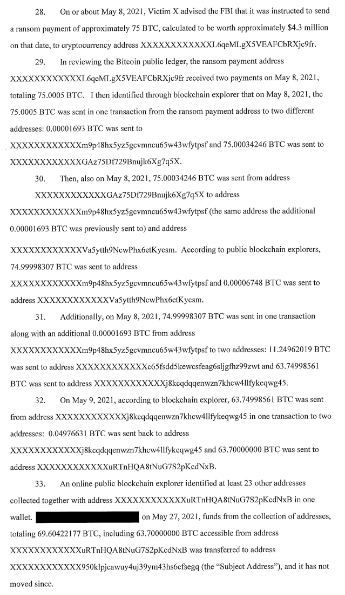
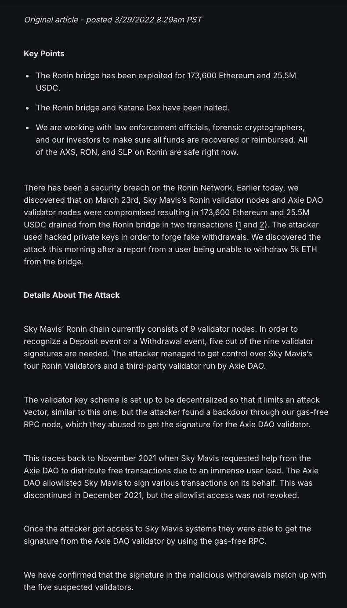
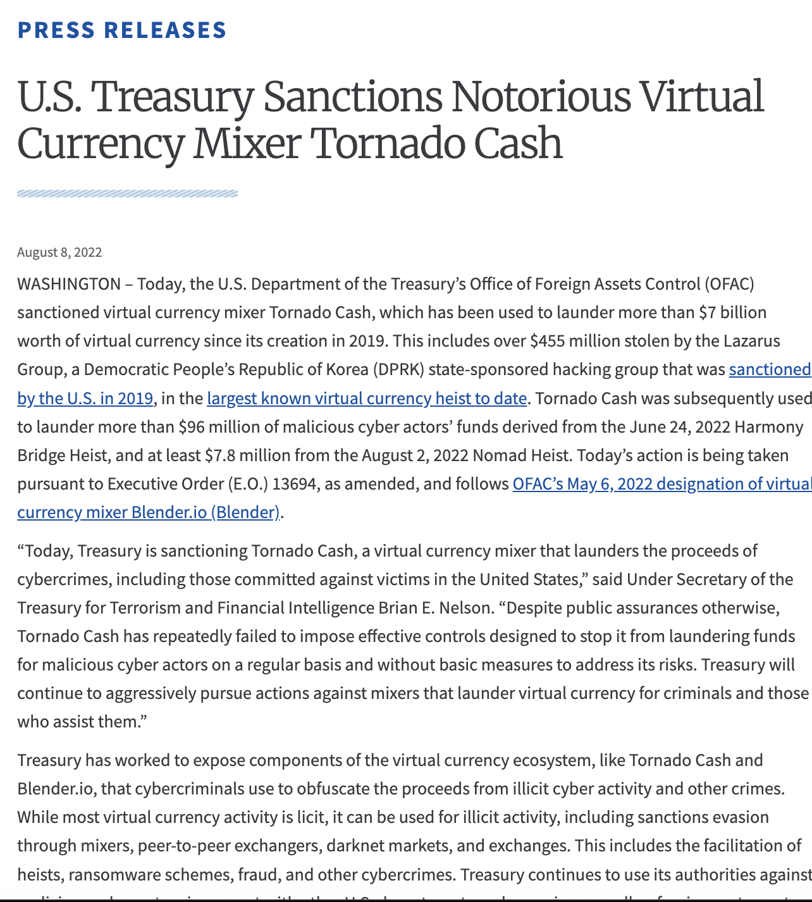

Section VIII: Forensics · Lesson 01-FO
Illicit Finance, Regulation, and Case Studies
Permissionless Finance
Blockchain’s borderless and decentralized features make it a powerful tool for illicit finance, enabling activities that attempt to bypass the traditional, regulated financial system.
Neutral Infrastructure: Protocols do not enforce “Know Your Customer” (KYC) rules at the base layer; anyone can create a wallet and transact.
Ransomware Extortion: Bitcoin remains the most common currency for extortion. It is used because of its massive liquidity and accessibility, not because it is untraceable.
Money Laundering: Criminals use decentralized networks to layer and obfuscate the origins of illicitly obtained funds.
Sanctions Evasion: Used by state and non-state actors to bypass international economic restrictions.
The Immutable Ledger
The same features that enable permissionless finance also create an unprecedented, permanent evidence trail for investigators. Because we cannot easily block malicious actors before they act on-chain, security relies heavily on tracing and analyzing funds after the fact.
- Pseudonymous, not Anonymous: A blockchain address acts as a persistent, unique identifier. It does not inherently reveal a real-world identity, but it can be profiled and tracked over time.
- Permanent Public Record: Every transaction is recorded on an immutable ledger, allowing for continuous monitoring and historical tracing.
- The Operational Security Reality: While an adversary can create a wallet without an ID, any operational security mistake they make—even years later—is permanently recorded and can be used to unmask them.
How Adversaries Hide
To break the trail of evidence on the public ledger, criminals use a toolkit of obfuscation techniques designed to make tracing as difficult as possible.
Mixers & Tumblers: These services act like a digital laundry, mixing stolen funds with a large pool of other users’ money to hide the original source
Chain Hopping: Criminals use cross-chain bridges to jump assets between different blockchains (e.g., from Ethereum to Solana), forcing investigators to start their search over on a new, separate ledger
Layering (Peel Chains): Instead of making one large transfer, they use a series of transactions to “peel off” small amounts of crypto, creating a complex and confusing web that hides the total amount being moved
(Breaks the Link)
(Hops the Chain)
(Hides the Volume)
Forensic Countermeasures
Combining All Signals: Mixing traditional on-chain ledger analysis with real-world open-source intelligence (OSINT) to find clues.
Adaptive Tools: Using AI and machine learning to automatically adapt and spot complex, evolving laundering techniques.
Teamwork & Sharing: Agencies and companies sharing information on bad actors and suspicious patterns.
Regulation & Mandates: Governments creating rules that require more transparency at key choke points, like bridges and exchanges.
Challenges in Forensic Analysis
Blockchain analysis is powerful, but it is not a silver bullet. Sophisticated adversaries and inherent technical limitations create significant obstacles, meaning on-chain data alone is rarely enough to close a case.
- Heuristic Evasion: Tools like CoinJoin are explicitly designed to break the foundational rules of tracing (like the Common-Input-Ownership heuristic) by mixing inputs from dozens of distinct users into a single transaction.
- Cryptographic “Ghost Flows”: Privacy coins (e.g., Monero, Zcash) use advanced cryptography to completely hide senders, receivers, and transaction amounts. When funds enter these networks, the on-chain trail goes dark.
- The Off-Chain Blind Spot: Much of the crypto economy happens off-chain inside the private databases of centralized exchanges, Over-The-Counter (OTC) desks, and darknet markets. Forensic tools cannot see into these private ledgers.
- Attribution Uncertainty: Even a perfect on-chain trace only leads to a pseudonymous address. Linking that address to a real human requires off-chain intelligence. Relying solely on heuristics risks false positives, which carry severe legal and reputational consequences.
Policy & Regulatory Response
The Pivot to Policy: Because technical tracing has absolute limits, investigators cannot win the fight using software alone. Defeating illicit finance requires combining these technical traces with regulatory chokepoints.
- Mandatory ID Checks (KYC/AML): Requiring identity verification at centralized exchanges and fiat on-ramps ensures that pseudonymous crypto can eventually be tied to a real-world identity when it enters the traditional financial system.
- Required Reporting: Financial institutions and exchanges must file Suspicious Activity Reports (SARs) when detecting abnormal behavior, proactively creating a data trail for investigators.
- Sanctions & Enforcement: Governments can designate specific smart contracts (e.g., Tornado Cash) or entities (e.g., Lazarus Group) as sanctioned, making it illegal for citizens and businesses to interact with them.
- Global Coordination: Because crypto is borderless, formal treaties and public-private partnerships are necessary to share intelligence and pursue criminals across international jurisdictions to prevent regulatory arbitrage.
KYC — Know Your Customer | AML — Anti-Money Laundering
Adversarial Counter-Responses to Regulation
As global regulations tighten around centralized exchanges, adversaries adapt by avoiding compliant fiat off-ramps entirely. If an exchange requires an ID, criminals seek paths that do not.
- Jurisdictional Arbitrage: Because crypto is borderless, adversaries route funds to exchanges located in countries with weak Anti-Money Laundering (AML) laws or jurisdictions that refuse to cooperate with Western subpoenas.
- Privacy Coin Gateways: Criminals use decentralized exchanges (DEXs) or cross-chain bridges to swap traceable assets (like Bitcoin) into privacy coins (like Monero). This deliberately breaks the visible chain before the funds are eventually cashed out.
- The “No Cash-Out” Economy: Often, adversaries don’t convert to fiat at all. They use cryptocurrency directly to purchase “bulletproof” hosting, VPNs, zero-day exploits, or physical goods from darknet providers that operate outside the law.
Decentralized Exchanges (DEXs)
- Smart Contract Driven: Unlike centralized exchanges (e.g., Coinbase), a DEX operates entirely via autonomous code on a blockchain, with no corporate entity holding user funds.
- Crypto-to-Crypto Only: Because they cannot interface with traditional banks, DEXs do not allow users to “cash out” to fiat (e.g., USD). They strictly facilitate swapping one digital asset for another.
- Automated Market Makers (AMMs): Instead of an order book matching buyers with sellers, a smart contract holds a liquidity pool of two tokens and enforces the constant product formula: x · y = k. The pool always holds Token A (quantity x) and Token B (quantity y) such that their product k stays fixed. Buying Token B reduces its supply, forcing x up to keep k constant—this is automatic, demand-driven pricing with no human market maker.
- Self-Custody: Users trade directly from their own wallets, retaining absolute control of their private keys before, during, and after the trade.
- Permissionless Access: There are no sign-ups, no accounts, and no Know Your Customer (KYC) identity checks required to swap tokens.
Bridges & Swaps: Crossing the Chain Boundary
- The Single-Chain Limit: Standard DEXs only swap assets on the same blockchain. They cannot natively convert Ethereum into a completely separate privacy coin like Monero (XMR).
- Wrapped Tokens: Adversaries can buy “Wrapped Monero” on an Ethereum DEX, but wrapped tokens live on the transparent public ledger, defeating the purpose of privacy.
Bridges & Swaps: Crossing the Chain Boundary (cont.)
- Atomic Swaps: A trustless cross-chain trade enforced by Hash Time-Locked Contracts (HTLCs). Both parties lock funds on their respective chains behind the same cryptographic secret (a hash preimage). When the recipient reveals the secret to claim their funds, it simultaneously unlocks the funds on the other chain—or both sides expire and refund if no claim is made. No middleman, no bridge contract.
- Forensic challenge: the two on-chain transactions appear on completely separate ledgers with no shared identifier linking them.
- Non-KYC Instant Exchanges: Criminals use automated swap services (e.g., SimpleSwap, FixedFloat) that do not require accounts. They send Bitcoin in, and the system sends native Monero—or Zcash directly to a “shielded” address—breaking the trail.
Future of Forensics: Automated Cross-Chain Tracing
Currently, tracing assets across chains is slow and manual—analysts juggle multiple block explorers, compare timestamps, and adjust for fees by hand. XSema automates this entirely.
- Automated Provenance Extraction: Bridge contracts emit structured on-chain events (deposit/withdrawal logs). XSema parses these logs to extract semantics—asset type, amount, source chain, destination chain—then correlates cross-chain hops using timing windows (deposit and matching withdrawal settle within seconds to minutes) and fee-adjusted amount matching. The result is a unified provenance graph that definitively links a Bitcoin input to its eventual Ethereum output.
Future of Forensics: Secure Cross-Agency Collaboration
Cross-chain crimes are cross-border crimes. Agencies often hold overlapping pieces of the same investigation but cannot legally share full case files. ForensiCross solves this without requiring disclosure.
- Privacy-Preserving Record Linkage: ForensiCross uses private set intersection: Agency A and Agency B each submit their encrypted suspect wallet lists. The protocol reveals only the overlap—wallets appearing in both investigations—without either agency ever seeing the other’s full dataset.
Future of Forensics: AI-Powered Attribution
Even with a perfect transaction graph, analysts still face Attribution Uncertainty. To link a wallet to a real-world entity, analysts must scour the internet for open-source intelligence (OSINT). AI is revolutionizing this step.
- Parsing Unstructured Data: Large Language Models (LLMs) can rapidly read millions of forum posts, darknet market listings, and social media tweets to find references to specific crypto addresses.
- Knowledge Graph Integration: AI tools can take ambiguous “tags” (e.g., an address labeled “Suspected Lazarus” by one firm and “Darknet Vendor” by another) and intelligently link them into a unified Knowledge Graph of threat actors.
📄 “Send payment to 0x1A2b…”
- Dark web forum post
Entity Profile:
Threat Actor X
Confidence: 94%
Future of Forensics: ForensiBlock & the Design Trade-off
Instead of treating forensics as a reactive, after-the-fact investigation, researchers are proposing “Security-by-Design” — building auditability directly into the protocol.
- ForensiBlock: An academic framework for enterprise and consortium blockchains with native auditability. Provenance metadata is embedded at the consensus layer — not bolted on afterward — making it a network rule rather than an optional audit trail.
- Where It Applies: Government supply chains, military logistics, and Central Bank Digital Currencies (CBDCs) — environments where auditability is a legal requirement and anonymity is not expected.
- The Policy Trade-off: Embedding strict forensic tracking into a public protocol directly conflicts with the Cypherpunk ethos of privacy and permissionless access. Bitcoin will never adopt this. The architecture is a deliberate choice between two incompatible values.
Future of Forensics: Embedded Provenance
Immutability records facts — not meaning. A standard blockchain permanently records that wallet A sent funds to a mixer at 14:03. It does not record that those funds came from a ransomware payment.
- The Obfuscation Problem: Criminals exploit immutability. A mixer’s hops are faithfully recorded forever — the history isn’t erased, it’s buried under layers of legitimate-looking transactions.
- What Provenance Adds: Embedded provenance attaches semantic context to each asset — origin, custody chain, compliance attestation — that a raw transaction graph never carries.
- Enforced at Consensus: A provenance-bearing system makes a valid custody proof a condition of transaction acceptance. No clean proof → transaction rejected by the protocol, not flagged by an analyst after the fact.
Case Study: Silk Road
Launched in 2011 by Ross Ulbricht (alias “Dread Pirate Roberts”), Silk Road was a massive darknet market operating on the Tor network.
It facilitated the sale of illegal drugs, forged identity documents, and hacking tools, making it a top target for federal law enforcement. Ulbricht famously attempted to use the network to commission murder-for-hire hits.
It relied exclusively on Bitcoin, promising users financial anonymity beyond the reach of traditional banks and police.
It used an internal Bitcoin bank, escrow, and “tumbler” to obscure flows. But the immutable ledger meant Bitcoin didn’t erase evidence; it permanently recorded it.
Silk Road: The Break

The FBI and DEA made over 100 undercover purchases of narcotics and tracked the physical packages through the mail — the break came from physical detective work, not code analysis.
Investigators found the real-world location of the Silk Road server by catching a brief IP address leak outside the Tor network.
In October 2013, agents tracked Ulbricht to a San Francisco public library. They staged a distraction to grab his open, unencrypted laptop before he could lock it.
Blockchain records became undeniable proof when analysts tied the public ledger’s transaction history directly to the 144,336 BTC recovered from his seized hard drive.
Silk Road: The Ledger

In November 2020, investigators seized over $1 billion in Bitcoin stolen from Silk Road back in 2012-2013.
Prosecutors linked the massive stash to previously hidden transactions from a hacker known as “Individual X.”
The market was long gone, but the immutable ledger preserved the evidence needed for attribution and civil forfeiture.
Ross Ulbricht received a presidential pardon on January 21, 2025.
Case Study: BTC-e

Founded in 2011 and operated by Alexander Vinnik, BTC-e (Bitcoin Exchange) was one of the world’s largest and most anonymous digital currency exchanges.
It operated with virtually no Anti-Money Laundering (AML) controls, making it a primary cash-out venue for cybercriminals worldwide.
Investigators targeted it because it acted as a massive “service cluster,” facilitating billions in transactions for ransomware operators, hackers, and drug traffickers.
BTC-e was a full web-based exchange — not just a wallet or address cluster.
Users created pseudonymous accounts, deposited crypto or wired fiat (USD, EUR, RUB) to BTC-e’s shell-company bank accounts, and traded on live order books across multiple pairs (BTC/USD, LTC/BTC, etc.).
Cash-out happened via wire transfer or payment processors like WebMoney — no identity required.
BTC-e: Weak KYC Made the Cluster Actionable
- Zero Identity Checks: Accounts could be opened with just a username, password, and an email address, explicitly attracting illicit users.
- Clustering the Giant: Analysts used common-input heuristics to group millions of distinct deposit addresses into a single, massive “BTC-e entity” cluster.
- The Aggregator: Once the cluster was mapped, investigators traced inflows from diverse criminal sources directly into it—including 300,000 BTC from the Mt. Gox hack.
- The Analytic Signal: Instead of tracking individual hackers, investigators followed the repeated “fan-in” patterns of stolen funds pooling into BTC-e’s central hot wallets.
(300k BTC)
Proceeds
Markets
BTC-e Central
Hot Wallets
Massive Service Cluster
BTC-e: Deanonymization
- The On-Chain Limit: Clustering proved the exchange was laundering billions, but an on-chain cluster is just a collection of numbers. It does not contain a name.
- Following the Fiat: To identify the operator, investigators had to follow the money off the blockchain and into traditional digital payment processors (like WebMoney).
- The OpSec Failure: Vinnik transferred millions in stolen Mt. Gox funds from BTC-e directly into personal accounts tied to his real name and IP addresses.
- The Synthesis: By combining on-chain cluster mapping with real-world subpoenas to banks and payment providers, the FBI unmasked the administrator.
On-Chain
BTC-e Cluster
Fiat Off-Ramp
WebMoney Processor
Real Identity
Alexander Vinnik
BTC-e: Indictment
- The 2017 Takedown: Coordinated action by the DOJ and FinCEN resulted in a $110 million penalty, domain seizures, and Vinnik’s arrest in Greece.
- The Global Chase: What followed was a multi-year extradition battle, highlighting the complexities of international jurisdiction in borderless crimes.
- The 2024 Resolution: On May 3, 2024, Alexander Vinnik pleaded guilty in the U.S. to conspiracy to commit money laundering.
- The Strategic Impact: Taking down the exchange captured funds and fundamentally disrupted the liquidity infrastructure that other cybercriminals relied upon.
Alexander Vinnik was released in exchanged for detained American teacher Marc Fogel in 2025.
Case Study: Colonial Pipeline
Colonial Pipeline is the largest refined products pipeline in the U.S., supplying nearly half the fuel for the East Coast.
In May 2021, a Russian-linked cybercriminal group called “DarkSide” breached Colonial’s IT network — then deployed ransomware that locked their billing and business systems.
Fearing the malware might spread to operational controls, Colonial proactively shut down the pipeline, causing widespread panic-buying and severe gas shortages.
Desperate to restore critical infrastructure, Colonial paid a ransom of approximately 75 BTC, giving the FBI a live trail to trace on the public ledger.
Colonial Pipeline: Payment Recovery
- Investigators used public blockchain explorers to follow the initial 75 BTC ransom through at least six sequential hops on the public ledger.
- The trace revealed 63.7 BTC consolidating in a specific, identifiable target address.
- The Jurisdiction: Because that address was tied to a server located in the Northern District of California, the FBI established legal jurisdiction.
- The Seizure: A magistrate judge authorized a warrant, and the FBI used the recovered private key to directly transfer and seize the funds.

Case Studey: Ronin Bridge
- Ronin is an Ethereum-linked sidechain built by Sky Mavis specifically for the massively popular play-to-earn game, Axie Infinity.
- To move money between the game and the broader crypto economy, users locked assets in a cross-chain bridge contract on Ethereum.
- In March 2022, attackers completely drained the Ethereum side of the bridge, stealing 173,600 ETH and 25.5M USDC (worth over $620 million).
- The theft went unnoticed for six days until a legitimate user tried to withdraw 5,000 ETH and found the contract empty.

Ronin: Key Management
- The Validator Set: The bridge was secured by a multi-signature scheme requiring 5 out of 9 validator nodes to approve any withdrawal.
- The Compromise: It wasn’t a code exploit. Attackers used spear-phishing to breach Sky Mavis’s IT infrastructure, stealing four validator private keys.
- The Fatal Flaw: To get the required fifth signature, attackers exploited a deprecated but active “gas-free” RPC node to hijack a key belonging to the Axie DAO.
- The Forgery: Armed with 5 keys, the attackers simply forged valid withdrawal requests, commanding the bridge to hand over the assets.
Ronin: Tracing Through the Mixers
- The Wash Cycle: Lazarus immediately began moving the stolen ETH through Tornado Cash on the Ethereum network to break the on-chain links.
- Chain Hopping: To further complicate the trace, they bridged a portion of the stolen funds from Ethereum over to the Bitcoin network.
- Double Mixing: Once on Bitcoin, they fed the funds into Blender.io, a centralized Bitcoin mixer.
- The Forensic Trace: Despite these layers, analysts used timing, volume correlations, and advanced heuristics to successfully trace the funds through both mixers and across the bridge.
Ronin: From Trace to Takedown
- Attribution: On April 14, 2022, using the blockchain trace, the FBI officially attributed the theft to North Korea’s Lazarus Group.
- Sanctioning the Infrastructure: Because the trace undeniably proved the mixers were laundering Ronin proceeds, the U.S. Treasury sanctioned Blender.io (May 2022) and Tornado Cash (Aug 2022).
- The Forensic Impact: This marked a shift: investigators weren’t just tracking the hackers; they were using on-chain evidence to systematically dismantle the obfuscation tools themselves.

Ronin: The Norwegian Recovery
- The Off-Ramp Mistake: Even after double-mixing and chain hopping, the hackers eventually needed to convert crypto to fiat, sending funds to centralized exchanges.
- The Seizure: Norwegian authorities (Økokrim) tracked these specific deposits and worked with the exchanges to freeze the accounts before the hackers could cash out.
- The Return: In 2023 and 2024, Norway successfully seized and returned approximately $5.8 million to the victims.
- Forensic Lesson: No matter how complex the middle of the maze is, the exit points (centralized exchanges) remain highly vulnerable to tracing and legal process.
Ronin: Legal Battles
- Sanctioning Code vs. Creators: Initially, the U.S. Treasury sanctioned the Tornado Cash smart contracts. However, following legal challenges, the sanctions were dropped in 2025 because immutable code is not a “person” or “entity.”
- Prosecuting the Operator: Instead, the DOJ targeted the humans behind the code. They prosecuted Roman Storm, the co-founder of Tornado Cash, for knowingly facilitating the laundering of over $1 billion.